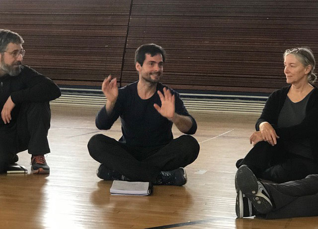

Alejandro Dambrosi


Director del Centro Latinoamericano de Capacitación en Spacial Dynamics®.
- Licenciado en Educación Física. Universidad Nacional de Luján.
- Practitioner Nivel I de Spacial Dynamics®.
- Nivel II de Spacial Dynamics®.
- Instructor Internacional de Gimnasia Bothmer®.
- Entrenador Internacional de Gimnasia Bothmer® (ABGA).
- Candidato nivel III Spacial Dynamics® (Cohorte “C” 2017-2019).
- Responsable de la formación del Core Studies y Nivel I en Spacial Dynamics®, en Latinoamérica.
- Terapeuta corporal con orientación antroposófica. Trabajo personalizado con terapias de movimiento a personas y grupos.
- Docente titular Esc. Nº 5 D. E. 9 Taller de Ritmo y Movimiento. Proyecto de Escuelas Intensificadas en Educación Física. Ministerio de Educación GCBA.
- Docente de Gimnasia Bothmer en la Sociedad Antroposófica Argentina. Iniciativa destinada a recaudar fondos para la construcción edilicia de la sede en Argentina.
- Docente de Movimiento (Spacial Dynamics® y Gimnasia Bothmer®) en la Escuela San Miguel Arcángel, de Pedagogía Waldorf. Villa Adelina. Buenos Aires.
- Capacitador en cursos y seminarios de formación docente de niveles inicial, primario y secundario.
- Tallerista en Cursos para padres en el marco de la Pedagogía Waldorf.
- Tallerista en Seminarios de Formación Docente de Maestros Waldorf de Jardín de Infantes, Primaria y Secundaria.
- Especialista en Gestión y Conducción del sistema educativo y sus instituciones. FLACSO.
- Consultor técnico pedagógico a nivel nacional.
- Terapeuta Corporal. Spacial Dynamics®.
- Técnico Superior en Juego y Creatividad, aplicado a personas, grupos y organizaciones. (Estudio Inés Moreno).
- Amplia experiencia en Educación Formal, No Formal, Recreación y Tiempo Libre.
- Coordinador del grupo de jóvenes (Rovers). Scouts de Argentina. Grupo Scout San Patricio.
- Experiencias en Danzas Circulares y Teatro Comunitario.
- Técnico en Investigación Científico-Deportiva. Instituto Nacional del Deporte.
- Diploma de Postgrado en Gestión y Conducción del Sistema Educativo y de sus Instituciones. Facultad Latinoamericana de Ciencias Sociales. FLACSO.